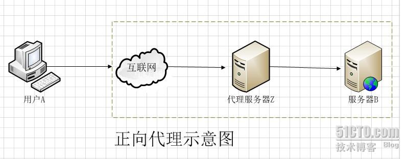
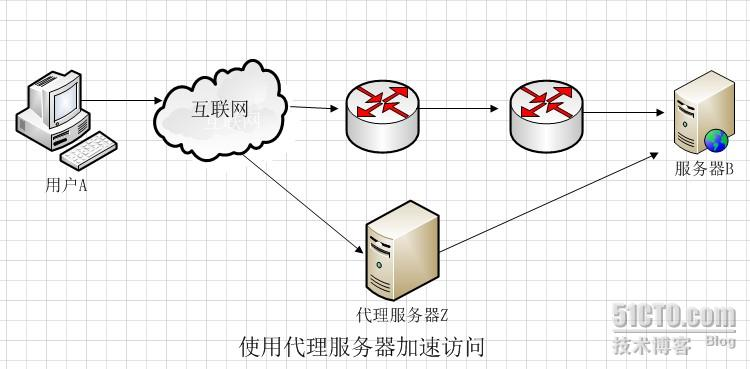
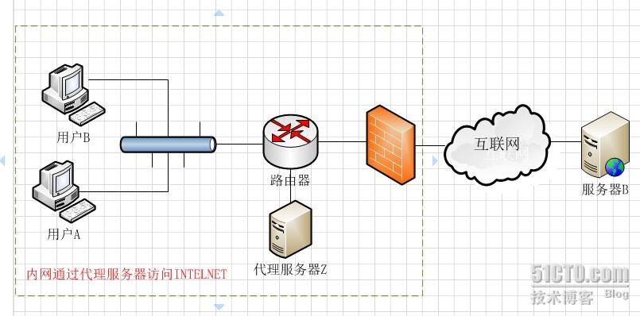
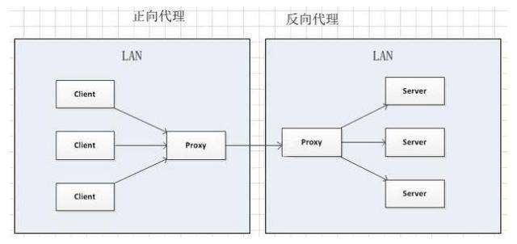
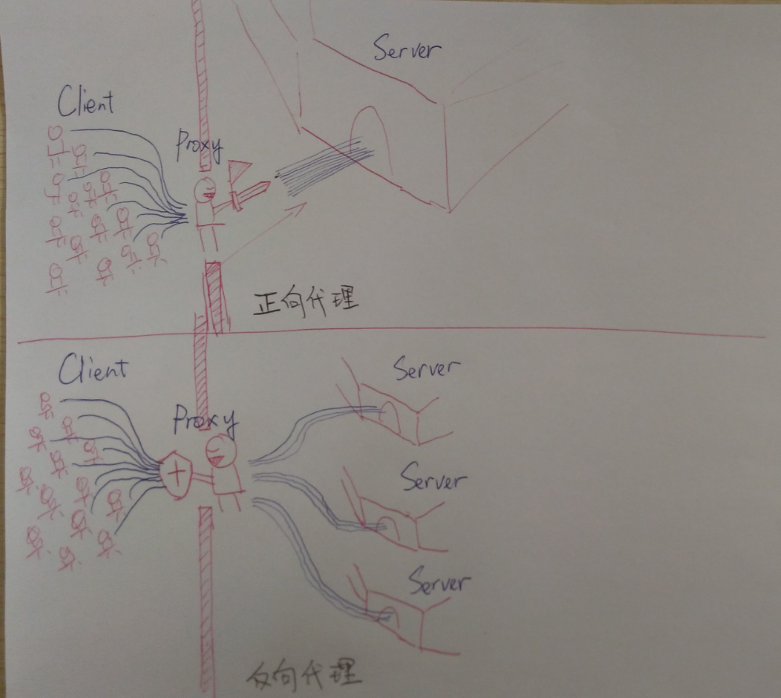

正向代理，也就是传说中的代理,他的工作原理就像一个跳板，简单的说，我是一个用户，我访问不了某网站，但是我能访问一个代理服务器，这个代理服务器呢，他能访问那个我不能访问的网站，于是我先连上代理服务器，告诉他我需要那个无法访问网站的内容，代理服务器去取回来，然后返回给我，一般指的就是VPN。从网站的角度，只在代理服务器来取内容的时候有一次记录，有时候并不知道是用户的请求，也隐藏了用户的资料，这取决于代理告不告诉网站。
举个例子，国内的用户想要访问 Google 时，会被阻挡。所以这个时候把请求发送到另外一个代理服务器（可以访问 Google 的服务器）上，由其代为转发请求和接收响应内容。
正向代理 是一个位于客户端和原始服务器(origin server)之间的服务器，为了从原始服务器取得内容，客户端向代理发送一个请求并指定目标(原始服务器)，然后代理向原始服务器转交请求并将获得的内容返回给客户端。客户端必须要进行一些特别的设置才能使用正向代理。
图解：

1、用户A主动请求要访问原始服务器B，从图中可以看出A先访问代理服务器z，然后由z将请求发给服务器B，同时代理服务器Z也负责将返回的数据发送给用户
2、用户知道服务器B，也知道代理服务器z，但是他所做的请求都是由代理服务器来处理
3、“缓存”---可以在代理服务器z做缓存，用户a不用直接访问服务器b就可以拿到所要的数据。（cache）

4、由于用户A到服务器B可能需要经过很多路由，导致速度较慢，采用代理，可以“加速访问”（解决网络链路慢的问题）
5、由图可以看出用户A不能直接访问服务器B，需要代理服务器z，常见实例为“翻墙”

6、从图中可以看出，采用代理服务器可以做一些验证，比如上网权限，因为要连接互联网首先得经过代理服务器。（权限验证，如服务器登录的跳板机）
例用户访问 http://www.test.com/readme，但www.test.com上并不存在readme页面，他是偷偷从另外一台服务器上取回来，然后作为自己的内容返回用户，但用户并不知情。这里所提到的 www.test.com 这个域名对应的服务器就设置了反向代理功能。
对于客户端而言反向代理就像是原始服务器，并且客户端不需要进行任何特别的设置。客户端向反向代理的命名空间(name-space)中的内容发送普通请求，接着反向代理将判断向何处(原始服务器)转交请求，并将获得的内容返回给客户端，就像这些内容原本就是它自己的一样。
代理对象不同
正向代理代理的对象是客户端，反向代理代理的对象是服务端。


从用途上来讲：
正向代理的典型用途是为在防火墙内的局域网客户端提供访问Internet的途径。正向代理还可以使用缓冲特性减少网络使用率。反向代理的典型用途是将防火墙后面的服务器提供给Internet用户访问。反向代理还可以为后端的多台服务器提供负载平衡，或为后端较慢的服务器提供缓冲服务。另外，反向代理还可以启用高级URL策略和管理技术，从而使处于不同web服务器系统的web页面同时存在于同一个URL空间下。
从安全性来讲：
正向代理允许客户端通过它访问任意网站并且隐藏客户端自身，因此你必须采取安全措施以确保仅为经过授权的客户端提供服务。反向代理对外都是透明的，访问者并不知道自己访问的是一个代理。
正向代理：
1、访问原来无法访问到的资源。
2、做缓存优化。
3、客户端访问控制管理，提高安全性。(跳板机)
反向代理
1、缓存优化。(cdn)
2、负载均衡。
3、提高安全性。